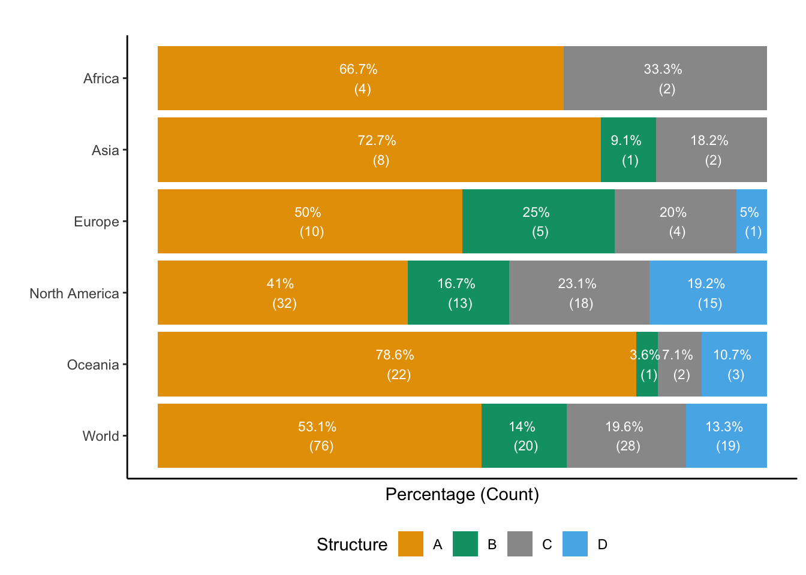

library(tigerstats)
library(tidyverse)
data("FakeSchool")
FakeSchool <- as_tibble(FakeSchool)Sampling Principles and Strategies
The first step in conducting research is to identify topics or questions that are to be investigated. A clearly laid out research question is helpful in identifying what subjects or cases should be studied and what variables are important. It is also important to consider how data are collected so that the data are reliable and help achieve the research goals.
Research Question(s)
Research Question: Over the last 5 years, how many MU Data Science or Statistics graduates have gone on to get a job in a field directly related to their degree.
Population: All DS or Statistics graduates from MU from the last 5 years.
Q. Can we survey the entire population?
A. This would likely be very difficult. It is more realistic to assume that we can work with a fraction of the population.
Q. How can we ensure the sample is an accurate reflection of the population?
A. Appropriate sampling.
Once we have an appropriate sample, most research questions actually break down into 2 parts:
Descriptive Statistics: What relationship can we observe between the variables in the sample?
Inferential Statistics: Supposing we see a relationship in the sample data, how much evidence is provided for a relationship in the population? Does the data provide lots of evidence for a relationship in the population, or could the relationship we see in the sample be due just to chance variation in the sampling process that gave us the data?
Anecdotal Evidence
“I met two students who did a Data Science degree in Maynooth but they are not working as data scientists. The degree must not get you a Data Science job.”
There are two problems here. First, the data only represent two cases. Second, and more importantly, it is unclear whether these cases are actually representative of the population. Data collected in this haphazard fashion only provides anecdotal evidence.
Sampling from the population
A population is the set of subjects of interest.
A sample is the subset of the population for which we have data.
Suppose that we were able to choose an appropriate sample that provides an accurate representation of the DS and Statistics Graduates:

Now we have two different summaries to consider for our research question:
Proportion of the sample that went into a directly related field
Statistic - describes the sample
Can be known, but it changes depending on the sample
Symbol - \(\hat{p}\)
Proportion of the population that went into a directly related field
Parameter - describes the population
Usually unknown - but we wish we knew it!
Symbol - \(\pi\)

Our goal is to use the information we’ve gathered from the sample to infer, or predict, something about the population.
For our example, we want to predict the population proportion, using our knowledge of the sample.
The accuracy of our sample proportion relies heavily upon how well our sample represents the population at large.
If our sample does a poor job at representing the population, then any inferences that we make about the population are also going to be poor.
Sampling Procedures
Almost all statistical methods are based on the notion of implied randomness. If data are not collected in a random framework from a population, these statistical methods, and the estimates and errors associated with the estimates, are not reliable.
There are four different methods of random sampling that we will introduce:
Simple Random Sampling (SRS): The population is sampled completely at random.
Systematic Sampling: The population is sampled in a systematic way at regular or fixed intervals.
Stratified Sampling: Divides the population into distinct groups called strata, based on shared characteristics (e.g., age, income level) and samples from the strata.
Cluster Sampling: Divides the population in naturally occurring groups called clusters (e.g., schools, neighbourhoods) and samples the clusters.
Example Data: FakeSchool
We will use the FakeSchool data to compare the sampling methods.
The dataset contains information on 28 students from FakeSchool. We will assume that this is the population from which we will sample.
Here is a snippet of the data:
# A tibble: 4 × 5
Students Sex class GPA Honors
<fct> <fct> <fct> <dbl> <fct>
1 Alice F Fr 3.8 Yes
2 Brad M Fr 2.6 Yes
3 Caleb M Fr 2.25 No
4 Daisy F Fr 2.1 No Let’s say that we are interested in mean GPA
We can compute the true mean GPA
FakeSchool %>%
pull(GPA) %>%
mean[1] 2.766429- Remember this value is not typically known!
Simple Random Sampling
In simple random sampling (SRS), for a given sample size, n, each member of the population has an equal chance of being selected.
Let’s select a simple random sample of 7, without replacement. We can accomplish this easily with the dplyr function sample_n() in R. This function requires two pieces of information:
the
sizeof the samplethe dataset from which to draw the sample
Simple Random Sampling in R
## create a simple random sample (n = 7)
srs <- FakeSchool %>%
sample_n(7)
srs# A tibble: 7 × 5
Students Sex class GPA Honors
<fct> <fct> <fct> <dbl> <fct>
1 Daisy F Fr 2.1 No
2 Bob M Sr 3.8 Yes
3 Frank M Sr 2 No
4 Garth M Jr 1.1 No
5 Eliott M Jr 1.9 No
6 Angela F Sr 4 Yes
7 Chris M So 4 Yes ## calculate the mean of the srs
srs %>%
pull(GPA) %>%
mean[1] 2.7SRS Strength vs Weaknesses
Strengths
The selection of one element does not affect the selection of others.
Each possible sample, of a given size, has an equal chance of being selected.
Simple random samples tend to be good representations of the population.
Requires little knowledge of the population.
Weaknesses
If there are small subgroups within the population, a SRS may not give an accurate representation of that subgroup. In fact, it may not include it at all! This is especially true if the sample size is small.
If the population is large and widely dispersed, it can be costly (both in time and money) to collect the data.
Systematic Sampling
In a systematic sample, the sample members from a larger population are selected according to a random starting point but with a fixed, periodic interval, i.
These are the two main steps required to implement systematic sampling:
Divide the size of the target population “N” by sample size “n” to calculate the sampling interval “i”. If this value is in decimals, it must be rounded to the nearest whole number/integer.
Then, a random starting point, “r”, may be chosen from where the sampling interval “i” is used in order to choose respondents from the target population.
- Before selecting the sample group, researchers must ensure that the list of the sample frame is not organized in a cyclical or periodic way in order to avoid selecting a biased sample group.
To illustrate the idea, let’s take a 1-in-4 systematic sample from our FakeSchool population.
Systematic Sampling in R
# randomly selecting our starting element.
start=sample(1:4,1)
start[1] 3# Now find every 4th row index starting with start
sample_rows <- seq(start, nrow(FakeSchool), by = 4)
sample_rows[1] 3 7 11 15 19 23 27# Now choose the data corresponding to the row indexes
sys_samp <- FakeSchool %>%
filter(row_number() %in% sample_rows)# print the systematic sample
sys_samp# A tibble: 7 × 5
Students Sex class GPA Honors
<fct> <fct> <fct> <dbl> <fct>
1 Caleb M Fr 2.25 No
2 Georg M Fr 1.4 No
3 Dylan M So 3.5 Yes
4 Adam M Jr 3.98 Yes
5 Faith F Jr 2.5 Yes
6 Bob M Sr 3.8 Yes
7 Ed M Sr 1.5 No # find the mean GPA from the sys_samp
sys_samp %>%
pull(GPA) %>%
mean[1] 2.704286Strength vs Weaknesses
Strengths
Assures an even, random sampling of the population.
It is especially useful when the population that you are studying is arranged in time. For example, suppose you are interested in the average amount of money that people spend at the grocery store on a Wednesday evening. A systematic sample could be used by selecting every 10th person that walks into the store.
Weaknesses
Not every combination has an equal chance of being selected. Many combinations will never be selected using a systematic sample!
Beware of periodicity in the population! If, the selections match some pattern then the sample may not be representative of the population.
Noticing patterns in data
The FakeSchool data is ordered according to the student’s year in school (freshmen, sophomore, junior, senior) and then by GPA (highest - lowest)
Taking a systematic sample ensures that we have a person from each class represented in our sample.
But, what would happen if we took a systematic sample where k = 7 and the sample started at 1?
Stratified Sampling
In a stratified sample, the population must first be separated into homogeneous groups, or strata. Each element only belongs to one stratum and the stratum consist of elements that are alike in some way. A simple random sample is then drawn from each stratum, which is combined to make the stratified sample.
Let’s take a stratified sample of 7 elements from FakeSchool using the following strata: Honors, Not Honors.
Stratified Sampling in R
# determine how many elements belong to each strata
FakeSchool %>%
count(Honors) # A tibble: 2 × 2
Honors n
<fct> <int>
1 No 16
2 Yes 12# get the data for each strata
# honors
hon_strata <- FakeSchool %>%
filter(Honors == "Yes")
# not honors
nonhon_strata <- FakeSchool %>%
filter(Honors == "No")Try to divide the sampling evenly, the sample size is odd so use the bigger number for the larger strata
hon_samp <- hon_strata %>%
sample_n(3)
nonhon_samp <- nonhon_strata %>%
sample_n(4)
strat_samp <- full_join(hon_samp, nonhon_samp)Joining with `by = join_by(Students, Sex, class, GPA, Honors)`# print the stratified sample
strat_samp# A tibble: 7 × 5
Students Sex class GPA Honors
<fct> <fct> <fct> <dbl> <fct>
1 Angela F Sr 4 Yes
2 Adam M Jr 3.98 Yes
3 Cassie F Jr 3.75 Yes
4 Garth M Jr 1.1 No
5 Brittany F Jr 3.9 No
6 Frank M Sr 2 No
7 Eva F Fr 1.8 No # get the mean GPA from the stratified sample
strat_samp %>%
pull(GPA) %>%
mean[1] 2.932857Strength vs Weaknesses
Strengths
Representative of the population, because elements from all strata are included in the sample.
Ensures that specific groups are represented, sometimes even proportionally, in the sample.
Allows comparisons to be made between strata, if necessary. For example, a stratified sample allows you to easily compare the mean GPA of Honors students to the mean GPA of non-Honors students.
Weaknesses
- Requires prior knowledge of the population. You have to know something about the population to be able to split into strata!
Cluster Sampling
Cluster sampling is a sampling method used when natural groups are evident in the population. The clusters should all be to similar each other: each cluster should be a small scale representation of the population. To take a cluster sample, a random sample of the clusters is chosen. The elements of the randomly chosen clusters make up the sample.
Let’s assume that we have a cluster variable (with clusters 1-4) in the FakeSchool data.
# A tibble: 28 × 6
Students Sex class GPA Honors cluster
<fct> <fct> <fct> <dbl> <fct> <int>
1 Alice F Fr 3.8 Yes 1
2 Brad M Fr 2.6 Yes 1
3 Caleb M Fr 2.25 No 2
4 Daisy F Fr 2.1 No 4
5 Faye F Fr 2 No 2
6 Eva F Fr 1.8 No 4
7 Georg M Fr 1.4 No 2
8 Andrea F So 4 Yes 2
9 Betsy F So 4 Yes 1
10 Chris M So 4 Yes 1
# ℹ 18 more rowsCluster Sampling in R
Let’s take a random sample of 2 of two clusters.
cluster_samp <- FakeSchool %>%
group_nest(cluster) %>%
sample_n(size = 2) %>%
unnest(data)
## what class groups were used
cluster_samp$cluster %>% unique()[1] 4 1# calculate the mean GPA from the cluster sample
cluster_samp %>%
pull(GPA) %>%
mean[1] 2.82Strength vs Weaknesses
Strengths
Makes it possible to sample if there is no list of the entire population, but there is a list of subpopulations. For example, there is not a list of all school members in the United States. However, there is a list of schools that you could sample and then acquire the members list from each of the selected schools.
Weaknesses
Not always representative of the population. Elements within clusters tend to be similar to one another based on some characteristic(s). This can lead to over-representation or under-representation of those characteristics in the sample.
Non random sampling
Expert Elicitation
Expert elicitation is a form of non-random survey sampling where experts in a specific field are intentionally selected to provide insights or judgments on a topic.
✅ Used when empirical data is scarce or uncertain (e.g., climate change risks).
❌ Relies on expert judgment, which can introduce biases based on individual perspectives.
Example: Estimating global mean sea-level rise and its uncertainties by 2100 and 2300 from an expert survey
A survey selected experts who (co-)authored sea-level related papers (>6).
To objectively select sea-level experts, we used the scientific publication database Web of Science of Clarivate to identify the most active publishers of sea-level papers.
On 15 February 2019, we searched for all papers published in peer-reviewed journals since (and including) 2014 where the term “sea level” appeared in the title, keywords or “KeyWords Plus” (an algorithm used to review words or phrases that appear in the cited references of an article) to identify scientists who (co-)authored the greatest number of these papers.
We obtained a sample of 878 experts who published at least six papers on “sea level” since 2014.
We found e-mail addresses for 817 of these experts and accordingly invited them to participate in the survey on 18 March 2019, using a unique identifier to ensure anonymity and avoid duplicate responses.
A total of 458 experts opened the e-mail invitation, and of these 112 completed the survey, which is typical for this type of internet survey.
The main reason given for declining to participate was a (perceived) lack of expertise in projecting GMSL rise.
We closed the survey on 30 June 2019. We could not analyze six responses from participants because they either left all boxes blank or filled with a question mark. Not all survey respondents completed every percentile box.
Thus, a total of 106 sea-level experts from 817 invites (13%) provided their probabilistic assessment of GMSL rise, given two temperature projection scenarios.
The paper can be found here.
Analysis
glimpse(expert_survey_dat)Rows: 112
Columns: 23
$ name <int> 1, 2, 3, 4, 5, 6, 7, 8, 9, 10, 11, 12, 13, 14, 15, 16, 17…
$ Expertise_A <fct> 1) Statistical or physical process modeling, 1) Statistic…
$ Expertise <chr> "Ice-sheet modeling, Glacial-isostatic adjustment modelin…
$ Blue_95_2100 <dbl> 80, 80, NA, 100, 126, 10, 75, 60, 55, 50, 60, NA, 55, 100…
$ Blue_83_2100 <dbl> NA, 68, 59, 90, 98, 8, 67, 50, 45, 40, 55, NA, NA, 60, 70…
$ Blue_50_2100 <dbl> 45, 50, 43, 70, 69, 5, 50, 40, 40, 30, 45, NA, 40, 50, 50…
$ Blue_17_2100 <dbl> NA, 41, 29, 40, 49, 3, 37, 30, 35, 20, 35, NA, NA, 40, 30…
$ Blue_5_2100 <dbl> 25, 35, NA, 21, 36, 1, 25, 20, 30, 10, 30, NA, 25, 30, 20…
$ Red_95_2100 <dbl> 210, 200, NA, 125, 238, 300, 150, 80, 150, 200, 190, NA, …
$ Red_83_2100 <dbl> NA, 160, 110, 110, 174, 200, 125, 70, 120, 120, 170, NA, …
$ Red_50_2100 <dbl> 100, 100, 84, 80, 111, 100, 100, 60, 80, 80, 110, NA, 70,…
$ Red_17_2100 <dbl> NA, 70, 61, 50, 79, 50, 75, 50, 50, 50, 100, NA, NA, 80, …
$ Red_5_2100 <dbl> 60, 50, NA, 40, 62, 30, 50, 40, 40, 30, 85, NA, 55, 60, 8…
$ Blue_95_2300 <dbl> NA, 250, NA, 130, 300, 20, 150, 60, 180, 120, 190, NA, 80…
$ Blue_83_2300 <dbl> NA, 180, 110, 90, 230, 10, 125, 50, 140, 100, 170, NA, NA…
$ Blue_50_2300 <dbl> NA, 100, 85, 70, 142, 5, 100, 40, 120, 80, 150, NA, 50, 1…
$ Blue_17_2300 <dbl> NA, 70, 60, 30, 83, 3, 75, 30, 100, 60, 135, NA, NA, 80, …
$ Blue_5_2300 <dbl> 25, 50, NA, 20, 50, 2, 50, 20, 80, 40, 100, NA, 30, 50, 3…
$ Red_95_2300 <dbl> NA, 1000, NA, 450, 700, 250, 250, 120, 700, 6, 750, NA, 1…
$ Red_83_2300 <dbl> NA, 800, 540, 400, 672, 200, 225, 100, 500, 4, 650, NA, N…
$ Red_50_2300 <dbl> NA, 500, 385, 290, 466, 100, 200, 80, 300, 3, 500, NA, 14…
$ Red_17_2300 <dbl> NA, 380, 230, 100, 336, 50, 150, 60, 150, 2, 475, NA, NA,…
$ Red_5_2300 <dbl> 140, 300, NA, 90, 220, 30, 125, 40, 100, 1, 400, NA, 55, …expert_survey_dat_long <- expert_survey_dat %>%
pivot_longer(Blue_95_2100:Red_5_2300,
names_to = "scenario",
values_to = "prediction") %>%
separate(col = scenario, into = c("Scenario","Percentile","Year"))
expert_survey_dat_long %>% filter(Scenario == "Red",Year == 2100) %>%
ggplot(aes(x=Percentile,y=prediction)) +
geom_boxplot(fill="firebrick")+
labs(x="Percentile",y="GMSL Rise (cm)",caption="Red 2100")+
ylim(-200,600)+
theme_bw()Snowball Sampling
Snowball sampling is a non-random sampling technique where existing participants help recruit new participants, forming a growing “snowball” effect.
✅ Useful for hard-to-reach populations
❌ Relies on social networks, which can lead to bias since participants are likely to refer similar individuals.
Example: Global survey shows planners use widely varying sea-level rise projections for coastal adaptation
Collaborating researchers known to be involved in sea level rise planning were contacted, sometimes targeting specific regions and cities.
Regional leads sent emails to their contact lists.
More details for this snowball sampling method can be found here.
Analysis
sl_planning_dat# A tibble: 21 × 4
Continent relative n group
<fct> <dbl> <dbl> <chr>
1 Asia 9.09 1 B
2 Europe 5 1 D
3 Oceania 3.57 1 B
4 Africa 33.3 2 C
5 Asia 18.2 2 C
6 Oceania 7.14 2 C
7 Oceania 10.7 3 D
8 Africa 66.7 4 A
9 Europe 20 4 C
10 Europe 25 5 B
# ℹ 11 more rows## create barplot with % in each category
## The colour palette
cbPalette <- c("#E69F00","#009E73","#999999","#56B4E9", "#F0E442", "#0072B2", "#D55E00", "#CC79A7")
## The plot
ggplot(sl_planning_dat, aes(x = fct_rev(Continent),y = relative, fill = group)) +
geom_bar(stat = "identity")+
geom_text(aes(x = Continent, label = paste0(round(relative,1),'% \n (',n,')')),
colour = 'white', position=position_stack(vjust=0.5), size = 3) +
ggtitle('')+
coord_flip() +
ylab("Percentage (Count)")+
xlab("")+
labs(fill = "Structure") +
scale_y_reverse() +
theme_classic() +
theme(legend.position = "bottom",
plot.title = element_text(size=12),
axis.text.x=element_blank(),
axis.ticks.x=element_blank()) +
scale_fill_manual(values=cbPalette) 